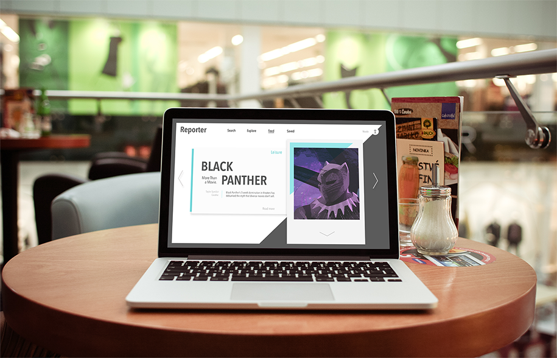

Reporter Design
In this particular project the point was to design a new website for the RIT Reporter student magazine. We were told to be bold and think outside of what is expected, so I chose the bold looks of geometric shape and limited color of the fashion world. I focused on interesting ways to use the website as both a visual and informative tool that also still gave way for easy of navigation and user experience.
I learned skills of using a whole "type" or "world" as a reference. I researched into why fashion websites do what they do and what the point of specific colors are. I completely immersed myself in the style and then adapted it to become more tame and geometric for the Reporter.